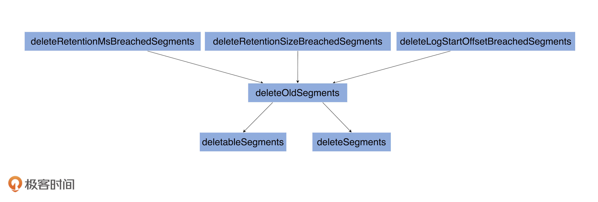

- 00 导读 构建Kafka工程和源码阅读环境、Scala语言热身.md
- 00 开篇词 阅读源码，逐渐成了职业进阶道路上的“必选项”.md
- 00 重磅加餐 带你快速入门Scala语言.md
- 01 日志段：保存消息文件的对象是怎么实现的？.md
- 02 日志（上）：日志究竟是如何加载日志段的？.md
- 03 日志（下）：彻底搞懂Log对象的常见操作.md
- 04 索引（上）：改进的二分查找算法在Kafka索引的应用.md
- 05 索引（下）：位移索引和时间戳索引的区别是什么？.md
- 06 请求通道：如何实现Kafka请求队列？.md
- 07 SocketServer（上）：Kafka到底是怎么应用NIO实现网络通信的？.md
- 08 SocketServer（中）：请求还要区分优先级？.md
- 09 SocketServer（下）：请求处理全流程源码分析.md
- 10 KafkaApis：Kafka最重要的源码入口，没有之一.md
- 11 Controller元数据：Controller都保存有哪些东西？有几种状态？.md
- 12 ControllerChannelManager：Controller如何管理请求发送？.md
- 13 ControllerEventManager：变身单线程后的Controller如何处理事件？.md
- 14 Controller选举是怎么实现的？.md
- 15 如何理解Controller在Kafka集群中的作用？.md
- 16 TopicDeletionManager： Topic是怎么被删除的？.md
- 17 ReplicaStateMachine：揭秘副本状态机实现原理.md
- 18 PartitionStateMachine：分区状态转换如何实现？.md
- 19 TimingWheel：探究Kafka定时器背后的高效时间轮算法.md
- 20 DelayedOperation：Broker是怎么延时处理请求的？.md
- 21 AbstractFetcherThread：拉取消息分几步？.md
- 22 ReplicaFetcherThread：Follower如何拉取Leader消息？.md
- 23 ReplicaManager（上）：必须要掌握的副本管理类定义和核心字段.md
- 24 ReplicaManager（中）：副本管理器是如何读写副本的？.md
- 25 ReplicaManager（下）：副本管理器是如何管理副本的？.md
- 26 MetadataCache：Broker是怎么异步更新元数据缓存的？.md
- 27 消费者组元数据（上）：消费者组都有哪些元数据？.md
- 28 消费者组元数据（下）：Kafka如何管理这些元数据？.md
- 29 GroupMetadataManager：组元数据管理器是个什么东西？.md
- 30 GroupMetadataManager：位移主题保存的只是位移吗？.md
- 31 GroupMetadataManager：查询位移时，不用读取位移主题？.md
- 32 GroupCoordinator：在Rebalance中，Coordinator如何处理成员入组？.md
- 33 GroupCoordinator：在Rebalance中，如何进行组同步？.md
- 特别放送（一）经典的Kafka学习资料有哪些？.md
- 特别放送（三）我是怎么度过日常一天的？.md
- 特别放送（二）一篇文章带你了解参与开源社区的全部流程.md
- 特别放送（五） Kafka 社区的重磅功能：移除 ZooKeeper 依赖.md
- 特别放送（四）20道经典的Kafka面试题详解.md
- 结束语 源码学习，我们才刚上路呢.md
03 日志（下）：彻底搞懂Log对象的常见操作
你好，我是胡夕。上节课，我们一起了解了日志加载日志段的过程。今天，我会继续带你学习Log源码，给你介绍Log对象的常见操作。
我一般习惯把Log的常见操作分为4大部分。
- 高水位管理操作：高水位的概念在Kafka中举足轻重，对它的管理，是Log最重要的功能之一。
- 日志段管理：Log是日志段的容器。高效组织与管理其下辖的所有日志段对象，是源码要解决的核心问题。
- 关键位移值管理：日志定义了很多重要的位移值，比如Log Start Offset和LEO等。确保这些位移值的正确性，是构建消息引擎一致性的基础。
- 读写操作：所谓的操作日志，大体上就是指读写日志。读写操作的作用之大，不言而喻。
接下来，我会按照这个顺序和你介绍Log对象的常见操作，并希望你特别关注下高水位管理部分。
事实上，社区关于日志代码的很多改进都是基于高水位机制的，有的甚至是为了替代高水位机制而做的更新。比如，Kafka的KIP-101提案正式引入的Leader Epoch机制，就是用来替代日志截断操作中的高水位的。显然，要深入学习Leader Epoch，你至少要先了解高水位并清楚它的弊病在哪儿才行。
既然高水位管理这么重要，那我们就从它开始说起吧。
高水位管理操作
在介绍高水位管理操作之前，我们先来了解一下高水位的定义。
定义
源码中日志对象定义高水位的语句只有一行：
@volatile private var highWatermarkMetadata: LogOffsetMetadata = LogOffsetMetadata(logStartOffset)
这行语句传达了两个重要的事实：
- 高水位值是volatile（易变型）的。因为多个线程可能同时读取它，因此需要设置成volatile，保证内存可见性。另外，由于高水位值可能被多个线程同时修改，因此源码使用Java Monitor锁来确保并发修改的线程安全。
- 高水位值的初始值是Log Start Offset值。上节课我们提到，每个Log对象都会维护一个Log Start Offset值。当首次构建高水位时，它会被赋值成Log Start Offset值。
你可能会关心LogOffsetMetadata是什么对象。因为它比较重要，我们一起来看下这个类的定义：
case class LogOffsetMetadata(messageOffset: Long,
segmentBaseOffset: Long = Log.UnknownOffset, relativePositionInSegment: Int = LogOffsetMetadata.UnknownFilePosition)
显然，它就是一个POJO类，里面保存了三个重要的变量。
- messageOffset：消息位移值，这是最重要的信息。我们总说高水位值，其实指的就是这个变量的值。
- segmentBaseOffset：保存该位移值所在日志段的起始位移。日志段起始位移值辅助计算两条消息在物理磁盘文件中位置的差值，即两条消息彼此隔了多少字节。这个计算有个前提条件，即两条消息必须处在同一个日志段对象上，不能跨日志段对象。否则它们就位于不同的物理文件上，计算这个值就没有意义了。这里的segmentBaseOffset，就是用来判断两条消息是否处于同一个日志段的。
- relativePositionSegment：保存该位移值所在日志段的物理磁盘位置。这个字段在计算两个位移值之间的物理磁盘位置差值时非常有用。你可以想一想，Kafka什么时候需要计算位置之间的字节数呢？答案就是在读取日志的时候。假设每次读取时只能读1MB的数据，那么，源码肯定需要关心两个位移之间所有消息的总字节数是否超过了1MB。
LogOffsetMetadata类的所有方法，都是围绕这3个变量展开的工具辅助类方法，非常容易理解。我会给出一个方法的详细解释，剩下的你可以举一反三。
def onSameSegment(that: LogOffsetMetadata): Boolean = {
if (messageOffsetOnly)
throw new KafkaException(s"$this cannot compare its segment info with $that since it only has message offset info")
this.segmentBaseOffset == that.segmentBaseOffset
}
看名字我们就知道了，这个方法就是用来判断给定的两个LogOffsetMetadata对象是否处于同一个日志段的。判断方法很简单，就是比较两个LogOffsetMetadata对象的segmentBaseOffset值是否相等。
好了，我们接着说回高水位，你要重点关注下获取和设置高水位值、更新高水位值，以及读取高水位值的方法。
获取和设置高水位值
关于获取高水位值的方法，其实很好理解，我就不多说了。设置高水位值的方法，也就是Setter方法更复杂一些，为了方便你理解，我用注释的方式来解析它的作用。
// getter method：读取高水位的位移值
def highWatermark: Long = highWatermarkMetadata.messageOffset
// setter method：设置高水位值
private def updateHighWatermarkMetadata(newHighWatermark: LogOffsetMetadata): Unit = {
if (newHighWatermark.messageOffset < 0) // 高水位值不能是负数
throw new IllegalArgumentException("High watermark offset should be non-negative")
lock synchronized { // 保护Log对象修改的Monitor锁
highWatermarkMetadata = newHighWatermark // 赋值新的高水位值
producerStateManager.onHighWatermarkUpdated(newHighWatermark.messageOffset) // 处理事务状态管理器的高水位值更新逻辑，忽略它……
maybeIncrementFirstUnstableOffset() // First Unstable Offset是Kafka事务机制的一部分，忽略它……
}
trace(s"Setting high watermark $newHighWatermark")
}
更新高水位值
除此之外，源码还定义了两个更新高水位值的方法：updateHighWatermark和maybeIncrementHighWatermark。从名字上来看，前者是一定要更新高水位值的，而后者是可能会更新也可能不会。
我们分别看下它们的实现原理。
// updateHighWatermark method
def updateHighWatermark(hw: Long): Long = {
// 新高水位值一定介于[Log Start Offset，Log End Offset]之间
val newHighWatermark = if (hw < logStartOffset)
logStartOffset
else if (hw > logEndOffset)
logEndOffset
else
hw
// 调用Setter方法来更新高水位值
updateHighWatermarkMetadata(LogOffsetMetadata(newHighWatermark))
newHighWatermark // 最后返回新高水位值
}
// maybeIncrementHighWatermark method
def maybeIncrementHighWatermark(newHighWatermark: LogOffsetMetadata): Option[LogOffsetMetadata] = {
// 新高水位值不能越过Log End Offset
if (newHighWatermark.messageOffset > logEndOffset)
throw new IllegalArgumentException(s"High watermark $newHighWatermark update exceeds current " +
s"log end offset $logEndOffsetMetadata")
lock.synchronized {
val oldHighWatermark = fetchHighWatermarkMetadata // 获取老的高水位值
// 新高水位值要比老高水位值大以维持单调增加特性，否则就不做更新！
// 另外，如果新高水位值在新日志段上，也可执行更新高水位操作
if (oldHighWatermark.messageOffset < newHighWatermark.messageOffset ||
(oldHighWatermark.messageOffset == newHighWatermark.messageOffset && oldHighWatermark.onOlderSegment(newHighWatermark))) {
updateHighWatermarkMetadata(newHighWatermark)
Some(oldHighWatermark) // 返回老的高水位值
} else {
None
}
}
}
你可能觉得奇怪，为什么要定义两个更新高水位的方法呢？
其实，这两个方法有着不同的用途。updateHighWatermark方法，主要用在Follower副本从Leader副本获取到消息后更新高水位值。一旦拿到新的消息，就必须要更新高水位值；而maybeIncrementHighWatermark方法，主要是用来更新Leader副本的高水位值。需要注意的是，Leader副本高水位值的更新是有条件的——某些情况下会更新高水位值，某些情况下可能不会。
就像我刚才说的，Follower副本成功拉取Leader副本的消息后必须更新高水位值，但Producer端向Leader副本写入消息时，分区的高水位值就可能不需要更新——因为它可能需要等待其他Follower副本同步的进度。因此，源码中定义了两个更新的方法，它们分别应用于不同的场景。
读取高水位值
关于高水位值管理的最后一个操作是fetchHighWatermarkMetadata方法。它不仅仅是获取高水位值，还要获取高水位的其他元数据信息，即日志段起始位移和物理位置信息。下面是它的实现逻辑：
private def fetchHighWatermarkMetadata: LogOffsetMetadata = {
checkIfMemoryMappedBufferClosed() // 读取时确保日志不能被关闭
val offsetMetadata = highWatermarkMetadata // 保存当前高水位值到本地变量，避免多线程访问干扰
if (offsetMetadata.messageOffsetOnly) { //没有获得到完整的高水位元数据
lock.synchronized {
val fullOffset = convertToOffsetMetadataOrThrow(highWatermark) // 通过读日志文件的方式把完整的高水位元数据信息拉出来
updateHighWatermarkMetadata(fullOffset) // 然后再更新一下高水位对象
fullOffset
}
} else { // 否则，直接返回即可
offsetMetadata
}
}
日志段管理
前面我反复说过，日志是日志段的容器，那它究竟是如何承担起容器一职的呢？
private val segments: ConcurrentNavigableMap[java.lang.Long, LogSegment] = new ConcurrentSkipListMap[java.lang.Long, LogSegment]
可以看到，源码使用Java的ConcurrentSkipListMap类来保存所有日志段对象。ConcurrentSkipListMap有2个明显的优势。
- 它是线程安全的，这样Kafka源码不需要自行确保日志段操作过程中的线程安全；
- 它是键值（Key）可排序的Map。Kafka将每个日志段的起始位移值作为Key，这样一来，我们就能够很方便地根据所有日志段的起始位移值对它们进行排序和比较，同时还能快速地找到与给定位移值相近的前后两个日志段。
所谓的日志段管理，无非是增删改查。接下来，我们就从这4个方面一一来看下。
1. 增加
Log对象中定义了添加日志段对象的方法：addSegment。
def addSegment(segment: LogSegment): LogSegment = this.segments.put(segment.baseOffset, segment)
很简单吧，就是调用Map的put方法将给定的日志段对象添加到segments中。
2. 删除
删除操作相对来说复杂一点。我们知道Kafka有很多留存策略，包括基于时间维度的、基于空间维度的和基于Log Start Offset维度的。那啥是留存策略呢？其实，它本质上就是根据一定的规则决定哪些日志段可以删除。
从源码角度来看，Log中控制删除操作的总入口是deleteOldSegments无参方法：
def deleteOldSegments(): Int = {
if (config.delete) {
deleteRetentionMsBreachedSegments() + deleteRetentionSizeBreachedSegments() + deleteLogStartOffsetBreachedSegments()
} else {
deleteLogStartOffsetBreachedSegments()
}
}
代码中的deleteRetentionMsBreachedSegments、deleteRetentionSizeBreachedSegments和deleteLogStartOffsetBreachedSegments分别对应于上面的那3个策略。
下面这张图展示了Kafka当前的三种日志留存策略，以及底层涉及到日志段删除的所有方法：

从图中我们可以知道，上面3个留存策略方法底层都会调用带参数版本的deleteOldSegments方法，而这个方法又相继调用了deletableSegments和deleteSegments方法。下面，我们来深入学习下这3个方法的代码。
首先是带参数版的deleteOldSegments方法：
private def deleteOldSegments(predicate: (LogSegment, Option[LogSegment]) => Boolean, reason: String): Int = {
lock synchronized {
val deletable = deletableSegments(predicate)
if (deletable.nonEmpty)
info(s"Found deletable segments with base offsets [${deletable.map(_.baseOffset).mkString(",")}] due to $reason")
deleteSegments(deletable)
}
}
该方法只有两个步骤：
- 使用传入的函数计算哪些日志段对象能够被删除；
- 调用deleteSegments方法删除这些日志段。
接下来是deletableSegments方法，我用注释的方式来解释下主体代码含义：
private def deletableSegments(predicate: (LogSegment, Option[LogSegment]) => Boolean): Iterable[LogSegment] = {
if (segments.isEmpty) { // 如果当前压根就没有任何日志段对象，直接返回
Seq.empty
} else {
val deletable = ArrayBuffer.empty[LogSegment]
var segmentEntry = segments.firstEntry
// 从具有最小起始位移值的日志段对象开始遍历，直到满足以下条件之一便停止遍历：
// 1. 测定条件函数predicate = false
// 2. 扫描到包含Log对象高水位值所在的日志段对象
// 3. 最新的日志段对象不包含任何消息
// 最新日志段对象是segments中Key值最大对应的那个日志段，也就是我们常说的Active Segment。完全为空的Active Segment如果被允许删除，后面还要重建它，故代码这里不允许删除大小为空的Active Segment。
// 在遍历过程中，同时不满足以上3个条件的所有日志段都是可以被删除的！
while (segmentEntry != null) {
val segment = segmentEntry.getValue
val nextSegmentEntry = segments.higherEntry(segmentEntry.getKey)
val (nextSegment, upperBoundOffset, isLastSegmentAndEmpty) =
if (nextSegmentEntry != null)
(nextSegmentEntry.getValue, nextSegmentEntry.getValue.baseOffset, false)
else
(null, logEndOffset, segment.size == 0)
if (highWatermark >= upperBoundOffset && predicate(segment, Option(nextSegment)) && !isLastSegmentAndEmpty) {
deletable += segment
segmentEntry = nextSegmentEntry
} else {
segmentEntry = null
}
}
deletable
}
}
最后是deleteSegments方法，这个方法执行真正的日志段删除操作。
private def deleteSegments(deletable: Iterable[LogSegment]): Int = {
maybeHandleIOException(s"Error while deleting segments for $topicPartition in dir ${dir.getParent}") {
val numToDelete = deletable.size
if (numToDelete > 0) {
// 不允许删除所有日志段对象。如果一定要做，先创建出一个新的来，然后再把前面N个删掉
if (segments.size == numToDelete)
roll()
lock synchronized {
checkIfMemoryMappedBufferClosed() // 确保Log对象没有被关闭
// 删除给定的日志段对象以及底层的物理文件
removeAndDeleteSegments(deletable, asyncDelete = true)
// 尝试更新日志的Log Start Offset值
maybeIncrementLogStartOffset(
segments.firstEntry.getValue.baseOffset)
}
}
numToDelete
}
}
这里我稍微解释一下，为什么要在删除日志段对象之后，尝试更新Log Start Offset值。Log Start Offset值是整个Log对象对外可见消息的最小位移值。如果我们删除了日志段对象，很有可能对外可见消息的范围发生了变化，自然要看一下是否需要更新Log Start Offset值。这就是deleteSegments方法最后要更新Log Start Offset值的原因。
3. 修改
说完了日志段删除，接下来我们来看如何修改日志段对象。
其实，源码里面不涉及修改日志段对象，所谓的修改或更新也就是替换而已，用新的日志段对象替换老的日志段对象。举个简单的例子。segments.put(1L, newSegment)语句在没有Key=1时是添加日志段，否则就是替换已有日志段。
4. 查询
最后再说下查询日志段对象。源码中需要查询日志段对象的地方太多了，但主要都是利用了ConcurrentSkipListMap的现成方法。
- segments.firstEntry：获取第一个日志段对象；
- segments.lastEntry：获取最后一个日志段对象，即Active Segment；
- segments.higherEntry：获取第一个起始位移值≥给定Key值的日志段对象；
- segments.floorEntry：获取最后一个起始位移值≤给定Key值的日志段对象。
关键位移值管理
Log对象维护了一些关键位移值数据，比如Log Start Offset、LEO等。其实，高水位值也算是关键位移值，只不过它太重要了，所以，我单独把它拎出来作为独立的一部分来讲了。
还记得我上节课给你说的那张标识LEO和Log Start Offset的图吗？我再来借助这张图说明一下这些关键位移值的区别：

请注意这张图中位移值15的虚线方框。这揭示了一个重要的事实：Log对象中的LEO永远指向下一条待插入消息，**也就是说，LEO值上面是没有消息的！**源码中定义LEO的语句很简单：
@volatile private var nextOffsetMetadata: LogOffsetMetadata = _
这里的nextOffsetMetadata就是我们所说的LEO，它也是LogOffsetMetadata类型的对象。Log对象初始化的时候，源码会加载所有日志段对象，并由此计算出当前Log的下一条消息位移值。之后，Log对象将此位移值赋值给LEO，代码片段如下：
locally {
val startMs = time.milliseconds
// 创建日志路径，保存Log对象磁盘文件
Files.createDirectories(dir.toPath)
// 初始化Leader Epoch缓存
initializeLeaderEpochCache()
// 加载所有日志段对象，并返回该Log对象下一条消息的位移值
val nextOffset = loadSegments()
// 初始化LEO元数据对象，LEO值为上一步获取的位移值，起始位移值是Active Segment的起始位移值，日志段大小是Active Segment的大小
nextOffsetMetadata = LogOffsetMetadata(nextOffset, activeSegment.baseOffset, activeSegment.size)
// 更新Leader Epoch缓存，去除LEO值之上的所有无效缓存项
leaderEpochCache.foreach(
_.truncateFromEnd(nextOffsetMetadata.messageOffset))
......
}
当然，代码中单独定义了更新LEO的updateLogEndOffset方法：
private def updateLogEndOffset(offset: Long): Unit = {
nextOffsetMetadata = LogOffsetMetadata(offset, activeSegment.baseOffset, activeSegment.size)
if (highWatermark >= offset) {
updateHighWatermarkMetadata(nextOffsetMetadata)
}
if (this.recoveryPoint > offset) {
this.recoveryPoint = offset
}
}
根据上面的源码，你应该能看到，更新过程很简单，我就不再展开说了。不过，你需要注意的是，如果在更新过程中发现新LEO值小于高水位值，那么Kafka还要更新高水位值，因为对于同一个Log对象而言，高水位值是不能越过LEO值的。这一点你一定要切记再切记！
讲到这儿，我就要提问了，Log对象什么时候需要更新LEO呢？
实际上，LEO对象被更新的时机有4个。
- Log对象初始化时：当Log对象初始化时，我们必须要创建一个LEO对象，并对其进行初始化。
- 写入新消息时：这个最容易理解。以上面的图为例，当不断向Log对象插入新消息时，LEO值就像一个指针一样，需要不停地向右移动，也就是不断地增加。
- Log对象发生日志切分（Log Roll）时：日志切分是啥呢？其实就是创建一个全新的日志段对象，并且关闭当前写入的日志段对象。这通常发生在当前日志段对象已满的时候。一旦发生日志切分，说明Log对象切换了Active Segment，那么，LEO中的起始位移值和段大小数据都要被更新，因此，在进行这一步操作时，我们必须要更新LEO对象。
- 日志截断（Log Truncation）时：这个也是显而易见的。日志中的部分消息被删除了，自然可能导致LEO值发生变化，从而要更新LEO对象。
你可以在代码中查看一下updateLogEndOffset方法的调用时机，验证下是不是和我所说的一致。这里我也想给你一个小小的提示：阅读源码的时候，最好加入一些思考，而不是简单地全盘接受源码的内容，也许你会有不一样的收获。
说完了LEO，我再跟你说说Log Start Offset。其实，就操作的流程和原理而言，源码管理Log Start Offset的方式要比LEO简单，因为Log Start Offset不是一个对象，它就是一个长整型的值而已。代码定义了专门的updateLogStartOffset方法来更新它。该方法很简单，我就不详细说了，你可以自己去学习下它的实现。
现在，我们再来思考一下，Kafka什么时候需要更新Log Start Offset呢？我们一一来看下。
- Log对象初始化时：和LEO类似，Log对象初始化时要给Log Start Offset赋值，一般是将第一个日志段的起始位移值赋值给它。
- 日志截断时：同理，一旦日志中的部分消息被删除，可能会导致Log Start Offset发生变化，因此有必要更新该值。
- Follower副本同步时：一旦Leader副本的Log对象的Log Start Offset值发生变化。为了维持和Leader副本的一致性，Follower副本也需要尝试去更新该值。
- 删除日志段时：这个和日志截断是类似的。凡是涉及消息删除的操作都有可能导致Log Start Offset值的变化。
- 删除消息时：严格来说，这个更新时机有点本末倒置了。在Kafka中，删除消息就是通过抬高Log Start Offset值来实现的，因此，删除消息时必须要更新该值。
读写操作
最后，我重点说说针对Log对象的读写操作。
1. 写操作
在Log中，涉及写操作的方法有3个：appendAsLeader、appendAsFollower和append。它们的调用关系如下图所示：

appendAsLeader是用于写Leader副本的，appendAsFollower是用于Follower副本同步的。它们的底层都调用了append方法。
我们重点学习下append方法。下图是append方法的执行流程：
看到这张图，你可能会感叹：“天呐，执行步骤居然有12步？这么多！”别急，现在我用代码注释的方式给你分别解释下每步的实现原理。
private def append(records: MemoryRecords,
origin: AppendOrigin,
interBrokerProtocolVersion: ApiVersion,
assignOffsets: Boolean,
leaderEpoch: Int): LogAppendInfo = {
maybeHandleIOException(s"Error while appending records to $topicPartition in dir ${dir.getParent}") {
// 第1步：分析和验证待写入消息集合，并返回校验结果
val appendInfo = analyzeAndValidateRecords(records, origin)
// 如果压根就不需要写入任何消息，直接返回即可
if (appendInfo.shallowCount == 0)
return appendInfo
// 第2步：消息格式规整，即删除无效格式消息或无效字节
var validRecords = trimInvalidBytes(records, appendInfo)
lock synchronized {
checkIfMemoryMappedBufferClosed() // 确保Log对象未关闭
if (assignOffsets) { // 需要分配位移
// 第3步：使用当前LEO值作为待写入消息集合中第一条消息的位移值
val offset = new LongRef(nextOffsetMetadata.messageOffset)
appendInfo.firstOffset = Some(offset.value)
val now = time.milliseconds
val validateAndOffsetAssignResult = try {
LogValidator.validateMessagesAndAssignOffsets(validRecords,
topicPartition,
offset,
time,
now,
appendInfo.sourceCodec,
appendInfo.targetCodec,
config.compact,
config.messageFormatVersion.recordVersion.value,
config.messageTimestampType,
config.messageTimestampDifferenceMaxMs,
leaderEpoch,
origin,
interBrokerProtocolVersion,
brokerTopicStats)
} catch {
case e: IOException =>
throw new KafkaException(s"Error validating messages while appending to log $name", e)
}
// 更新校验结果对象类LogAppendInfo
validRecords = validateAndOffsetAssignResult.validatedRecords
appendInfo.maxTimestamp = validateAndOffsetAssignResult.maxTimestamp
appendInfo.offsetOfMaxTimestamp = validateAndOffsetAssignResult.shallowOffsetOfMaxTimestamp
appendInfo.lastOffset = offset.value - 1
appendInfo.recordConversionStats = validateAndOffsetAssignResult.recordConversionStats
if (config.messageTimestampType == TimestampType.LOG_APPEND_TIME)
appendInfo.logAppendTime = now
// 第4步：验证消息，确保消息大小不超限
if (validateAndOffsetAssignResult.messageSizeMaybeChanged) {
for (batch <- validRecords.batches.asScala) {
if (batch.sizeInBytes > config.maxMessageSize) {
// we record the original message set size instead of the trimmed size
// to be consistent with pre-compression bytesRejectedRate recording
brokerTopicStats.topicStats(topicPartition.topic).bytesRejectedRate.mark(records.sizeInBytes)
brokerTopicStats.allTopicsStats.bytesRejectedRate.mark(records.sizeInBytes)
throw new RecordTooLargeException(s"Message batch size is ${batch.sizeInBytes} bytes in append to" +
s"partition $topicPartition which exceeds the maximum configured size of ${config.maxMessageSize}.")
}
}
}
} else { // 直接使用给定的位移值，无需自己分配位移值
if (!appendInfo.offsetsMonotonic) // 确保消息位移值的单调递增性
throw new OffsetsOutOfOrderException(s"Out of order offsets found in append to $topicPartition: " +
records.records.asScala.map(_.offset))
if (appendInfo.firstOrLastOffsetOfFirstBatch < nextOffsetMetadata.messageOffset) {
val firstOffset = appendInfo.firstOffset match {
case Some(offset) => offset
case None => records.batches.asScala.head.baseOffset()
}
val firstOrLast = if (appendInfo.firstOffset.isDefined) "First offset" else "Last offset of the first batch"
throw new UnexpectedAppendOffsetException(
s"Unexpected offset in append to $topicPartition. $firstOrLast " +
s"${appendInfo.firstOrLastOffsetOfFirstBatch} is less than the next offset ${nextOffsetMetadata.messageOffset}. " +
s"First 10 offsets in append: ${records.records.asScala.take(10).map(_.offset)}, last offset in" +
s" append: ${appendInfo.lastOffset}. Log start offset = $logStartOffset",
firstOffset, appendInfo.lastOffset)
}
}
// 第5步：更新Leader Epoch缓存
validRecords.batches.asScala.foreach { batch =>
if (batch.magic >= RecordBatch.MAGIC_VALUE_V2) {
maybeAssignEpochStartOffset(batch.partitionLeaderEpoch, batch.baseOffset)
} else {
leaderEpochCache.filter(_.nonEmpty).foreach { cache =>
warn(s"Clearing leader epoch cache after unexpected append with message format v${batch.magic}")
cache.clearAndFlush()
}
}
}
// 第6步：确保消息大小不超限
if (validRecords.sizeInBytes > config.segmentSize) {
throw new RecordBatchTooLargeException(s"Message batch size is ${validRecords.sizeInBytes} bytes in append " +
s"to partition $topicPartition, which exceeds the maximum configured segment size of ${config.segmentSize}.")
}
// 第7步：执行日志切分。当前日志段剩余容量可能无法容纳新消息集合，因此有必要创建一个新的日志段来保存待写入的所有消息
val segment = maybeRoll(validRecords.sizeInBytes, appendInfo)
val logOffsetMetadata = LogOffsetMetadata(
messageOffset = appendInfo.firstOrLastOffsetOfFirstBatch,
segmentBaseOffset = segment.baseOffset,
relativePositionInSegment = segment.size)
// 第8步：验证事务状态
val (updatedProducers, completedTxns, maybeDuplicate) = analyzeAndValidateProducerState(
logOffsetMetadata, validRecords, origin)
maybeDuplicate.foreach { duplicate =>
appendInfo.firstOffset = Some(duplicate.firstOffset)
appendInfo.lastOffset = duplicate.lastOffset
appendInfo.logAppendTime = duplicate.timestamp
appendInfo.logStartOffset = logStartOffset
return appendInfo
}
// 第9步：执行真正的消息写入操作，主要调用日志段对象的append方法实现
segment.append(largestOffset = appendInfo.lastOffset,
largestTimestamp = appendInfo.maxTimestamp,
shallowOffsetOfMaxTimestamp = appendInfo.offsetOfMaxTimestamp,
records = validRecords)
// 第10步：更新LEO对象，其中，LEO值是消息集合中最后一条消息位移值+1
// 前面说过，LEO值永远指向下一条不存在的消息
updateLogEndOffset(appendInfo.lastOffset + 1)
// 第11步：更新事务状态
for (producerAppendInfo <- updatedProducers.values) {
producerStateManager.update(producerAppendInfo)
}
for (completedTxn <- completedTxns) {
val lastStableOffset = producerStateManager.lastStableOffset(completedTxn)
segment.updateTxnIndex(completedTxn, lastStableOffset)
producerStateManager.completeTxn(completedTxn)
}
producerStateManager.updateMapEndOffset(appendInfo.lastOffset + 1)
maybeIncrementFirstUnstableOffset()
trace(s"Appended message set with last offset: ${appendInfo.lastOffset}, " +
s"first offset: ${appendInfo.firstOffset}, " +
s"next offset: ${nextOffsetMetadata.messageOffset}, " +
s"and messages: $validRecords")
// 是否需要手动落盘。一般情况下我们不需要设置Broker端参数log.flush.interval.messages
// 落盘操作交由操作系统来完成。但某些情况下，可以设置该参数来确保高可靠性
if (unflushedMessages >= config.flushInterval)
flush()
// 第12步：返回写入结果
appendInfo
}
}
}
这些步骤里有没有需要你格外注意的呢？我希望你重点关注下第1步，即Kafka如何校验消息，重点是看针对不同的消息格式版本，Kafka是如何做校验的。
说起消息校验，你还记得上一讲我们提到的LogAppendInfo类吗？它就是一个普通的POJO类，里面几乎保存了待写入消息集合的所有信息。我们来详细了解一下。
case class LogAppendInfo(var firstOffset: Option[Long],
var lastOffset: Long, // 消息集合最后一条消息的位移值
var maxTimestamp: Long, // 消息集合最大消息时间戳
var offsetOfMaxTimestamp: Long, // 消息集合最大消息时间戳所属消息的位移值
var logAppendTime: Long, // 写入消息时间戳
var logStartOffset: Long, // 消息集合首条消息的位移值
// 消息转换统计类，里面记录了执行了格式转换的消息数等数据
var recordConversionStats: RecordConversionStats,
sourceCodec: CompressionCodec, // 消息集合中消息使用的压缩器（Compressor）类型，比如是Snappy还是LZ4
targetCodec: CompressionCodec, // 写入消息时需要使用的压缩器类型
shallowCount: Int, // 消息批次数，每个消息批次下可能包含多条消息
validBytes: Int, // 写入消息总字节数
offsetsMonotonic: Boolean, // 消息位移值是否是顺序增加的
lastOffsetOfFirstBatch: Long, // 首个消息批次中最后一条消息的位移
recordErrors: Seq[RecordError] = List(), // 写入消息时出现的异常列表
errorMessage: String = null) { // 错误码
......
}
大部分字段的含义很明确，这里我稍微提一下lastOffset和lastOffsetOfFirstBatch。
Kafka消息格式经历了两次大的变迁，目前是0.11.0.0版本引入的Version 2消息格式。我们没有必要详细了解这些格式的变迁，你只需要知道，在0.11.0.0版本之后，lastOffset和lastOffsetOfFirstBatch都是指向消息集合的最后一条消息即可。它们的区别主要体现在0.11.0.0之前的版本。
append方法调用analyzeAndValidateRecords方法对消息集合进行校验，并生成对应的LogAppendInfo对象，其流程如下：
private def analyzeAndValidateRecords(records: MemoryRecords, origin: AppendOrigin): LogAppendInfo = {
var shallowMessageCount = 0
var validBytesCount = 0
var firstOffset: Option[Long] = None
var lastOffset = -1L
var sourceCodec: CompressionCodec = NoCompressionCodec
var monotonic = true
var maxTimestamp = RecordBatch.NO_TIMESTAMP
var offsetOfMaxTimestamp = -1L
var readFirstMessage = false
var lastOffsetOfFirstBatch = -1L
for (batch <- records.batches.asScala) {
// 消息格式Version 2的消息批次，起始位移值必须从0开始
if (batch.magic >= RecordBatch.MAGIC_VALUE_V2 && origin == AppendOrigin.Client && batch.baseOffset != 0)
throw new InvalidRecordException(s"The baseOffset of the record batch in the append to $topicPartition should " +
s"be 0, but it is ${batch.baseOffset}")
if (!readFirstMessage) {
if (batch.magic >= RecordBatch.MAGIC_VALUE_V2)
firstOffset = Some(batch.baseOffset) // 更新firstOffset字段
lastOffsetOfFirstBatch = batch.lastOffset // 更新lastOffsetOfFirstBatch字段
readFirstMessage = true
}
// 一旦出现当前lastOffset不小于下一个batch的lastOffset，说明上一个batch中有消息的位移值大于后面batch的消息
// 这违反了位移值单调递增性
if (lastOffset >= batch.lastOffset)
monotonic = false
// 使用当前batch最后一条消息的位移值去更新lastOffset
lastOffset = batch.lastOffset
// 检查消息批次总字节数大小是否超限，即是否大于Broker端参数max.message.bytes值
val batchSize = batch.sizeInBytes
if (batchSize > config.maxMessageSize) {
brokerTopicStats.topicStats(topicPartition.topic).bytesRejectedRate.mark(records.sizeInBytes)
brokerTopicStats.allTopicsStats.bytesRejectedRate.mark(records.sizeInBytes)
throw new RecordTooLargeException(s"The record batch size in the append to $topicPartition is $batchSize bytes " +
s"which exceeds the maximum configured value of ${config.maxMessageSize}.")
}
// 执行消息批次校验，包括格式是否正确以及CRC校验
if (!batch.isValid) {
brokerTopicStats.allTopicsStats.invalidMessageCrcRecordsPerSec.mark()
throw new CorruptRecordException(s"Record is corrupt (stored crc = ${batch.checksum()}) in topic partition $topicPartition.")
}
// 更新maxTimestamp字段和offsetOfMaxTimestamp
if (batch.maxTimestamp > maxTimestamp) {
maxTimestamp = batch.maxTimestamp
offsetOfMaxTimestamp = lastOffset
}
// 累加消息批次计数器以及有效字节数，更新shallowMessageCount字段
shallowMessageCount += 1
validBytesCount += batchSize
// 从消息批次中获取压缩器类型
val messageCodec = CompressionCodec.getCompressionCodec(batch.compressionType.id)
if (messageCodec != NoCompressionCodec)
sourceCodec = messageCodec
}
// 获取Broker端设置的压缩器类型，即Broker端参数compression.type值。
// 该参数默认值是producer，表示sourceCodec用的什么压缩器，targetCodec就用什么
val targetCodec = BrokerCompressionCodec.getTargetCompressionCodec(config.compressionType, sourceCodec)
// 最后生成LogAppendInfo对象并返回
LogAppendInfo(firstOffset, lastOffset, maxTimestamp, offsetOfMaxTimestamp, RecordBatch.NO_TIMESTAMP, logStartOffset,
RecordConversionStats.EMPTY, sourceCodec, targetCodec, shallowMessageCount, validBytesCount, monotonic, lastOffsetOfFirstBatch)
}
2. 读取操作
说完了append方法，下面我们聊聊read方法。
read方法的流程相对要简单一些，首先来看它的方法签名：
def read(startOffset: Long,
maxLength: Int,
isolation: FetchIsolation,
minOneMessage: Boolean): FetchDataInfo = {
......
}
它接收4个参数，含义如下：
- startOffset，即从Log对象的哪个位移值开始读消息。
- maxLength，即最多能读取多少字节。
- isolation，设置读取隔离级别，主要控制能够读取的最大位移值，多用于Kafka事务。
- minOneMessage，即是否允许至少读一条消息。设想如果消息很大，超过了maxLength，正常情况下read方法永远不会返回任何消息。但如果设置了该参数为true，read方法就保证至少能够返回一条消息。
read方法的返回值是FetchDataInfo类，也是一个POJO类，里面最重要的数据就是读取的消息集合，其他数据还包括位移等元数据信息。
下面我们来看下read方法的流程。
def read(startOffset: Long,
maxLength: Int,
isolation: FetchIsolation,
minOneMessage: Boolean): FetchDataInfo = {
maybeHandleIOException(s"Exception while reading from $topicPartition in dir ${dir.getParent}") {
trace(s"Reading $maxLength bytes from offset $startOffset of length $size bytes")
val includeAbortedTxns = isolation == FetchTxnCommitted
// 读取消息时没有使用Monitor锁同步机制，因此这里取巧了，用本地变量的方式把LEO对象保存起来，避免争用（race condition）
val endOffsetMetadata = nextOffsetMetadata
val endOffset = nextOffsetMetadata.messageOffset
if (startOffset == endOffset) // 如果从LEO处开始读取，那么自然不会返回任何数据，直接返回空消息集合即可
return emptyFetchDataInfo(endOffsetMetadata, includeAbortedTxns)
// 找到startOffset值所在的日志段对象。注意要使用floorEntry方法
var segmentEntry = segments.floorEntry(startOffset)
// return error on attempt to read beyond the log end offset or read below log start offset
// 满足以下条件之一将被视为消息越界，即你要读取的消息不在该Log对象中：
// 1. 要读取的消息位移超过了LEO值
// 2. 没找到对应的日志段对象
// 3. 要读取的消息在Log Start Offset之下，同样是对外不可见的消息
if (startOffset > endOffset || segmentEntry == null || startOffset < logStartOffset)
throw new OffsetOutOfRangeException(s"Received request for offset $startOffset for partition $topicPartition, " +
s"but we only have log segments in the range $logStartOffset to $endOffset.")
// 查看一下读取隔离级别设置。
// 普通消费者能够看到[Log Start Offset, 高水位值)之间的消息
// 事务型消费者只能看到[Log Start Offset, Log Stable Offset]之间的消息。Log Stable Offset(LSO)是比LEO值小的位移值，为Kafka事务使用
// Follower副本消费者能够看到[Log Start Offset，LEO)之间的消息
val maxOffsetMetadata = isolation match {
case FetchLogEnd => nextOffsetMetadata
case FetchHighWatermark => fetchHighWatermarkMetadata
case FetchTxnCommitted => fetchLastStableOffsetMetadata
}
// 如果要读取的起始位置超过了能读取的最大位置，返回空的消息集合，因为没法读取任何消息
if (startOffset > maxOffsetMetadata.messageOffset) {
val startOffsetMetadata = convertToOffsetMetadataOrThrow(startOffset)
return emptyFetchDataInfo(startOffsetMetadata, includeAbortedTxns)
}
// 开始遍历日志段对象，直到读出东西来或者读到日志末尾
while (segmentEntry != null) {
val segment = segmentEntry.getValue
val maxPosition = {
if (maxOffsetMetadata.segmentBaseOffset == segment.baseOffset) {
maxOffsetMetadata.relativePositionInSegment
} else {
segment.size
}
}
// 调用日志段对象的read方法执行真正的读取消息操作
val fetchInfo = segment.read(startOffset, maxLength, maxPosition, minOneMessage)
if (fetchInfo == null) { // 如果没有返回任何消息，去下一个日志段对象试试
segmentEntry = segments.higherEntry(segmentEntry.getKey)
} else { // 否则返回
return if (includeAbortedTxns)
addAbortedTransactions(startOffset, segmentEntry, fetchInfo)
else
fetchInfo
}
}
// 已经读到日志末尾还是没有数据返回，只能返回空消息集合
FetchDataInfo(nextOffsetMetadata, MemoryRecords.EMPTY)
}
}
总结
今天，我重点讲解了Kafka的Log对象以及常见的操作。我们复习一下。
- 高水位管理：Log对象定义了高水位对象以及管理它的各种操作，主要包括更新和读取。
- 日志段管理：作为日志段的容器，Log对象保存了很多日志段对象。你需要重点掌握这些日志段对象被组织在一起的方式以及Kafka Log对象是如何对它们进行管理的。
- 关键位移值管理：主要涉及对Log Start Offset和LEO的管理。这两个位移值是Log对象非常关键的字段。比如，副本管理、状态机管理等高阶功能都要依赖于它们。
- 读写操作：日志读写是实现Kafka消息引擎基本功能的基石。虽然你不需要掌握每行语句的含义，但你至少要明白大体的操作流程。
讲到这里，Kafka Log部分的源码我就介绍完了。我建议你特别关注下高水位管理和读写操作部分的代码（特别是后者），并且结合我今天讲的内容，重点分析下这两部分的实现原理。最后，我用一张思维导图来帮助你理解和记忆Log源码中的这些常见操作：

课后讨论
你能为Log对象添加一个方法，统计介于高水位值和LEO值之间的消息总数吗？
欢迎你在留言区畅所欲言，跟我交流讨论，也欢迎你把今天的内容分享给你的朋友。
© 2019 - 2023 Liangliang Lee. Powered by Vert.x and hexo-theme-book.